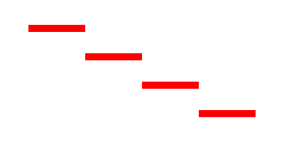

MovePathCursor()
语法
MovePathCursor(x.d, y.d [, Flags])概要
Moves the cursor of the vector drawing path to a new location. This also starts a new figure within the path, which means that a call to ClosePath() will draw a line back to this location.
参数
x.d, y.d The new position for the path cursor. Flags (可选) Can be one of the following values: #PB_Path_Default : The new position is absolute (default) #PB_Path_Relative: The new position is relative to the last cursor position.
返回值
无.
示例
If OpenWindow(0, 0, 0, 400, 200, "VectorDrawing", #PB_Window_SystemMenu | #PB_Window_ScreenCentered) CanvasGadget(0, 0, 0, 400, 200) If StartVectorDrawing(CanvasVectorOutput(0)) MovePathCursor(40, 40) For i = 1 To 4 AddPathLine(80, 0, #PB_Path_Relative) MovePathCursor(0, 40, #PB_Path_Relative) Next i VectorSourceColor(RGBA(255, 0, 0, 255)) StrokePath(10) StopVectorDrawing() EndIf Repeat Event = WaitWindowEvent() Until Event = #PB_Event_CloseWindow EndIf

参阅
ClosePath(), AddPathLine(), FillPath(), StrokePath()
已支持操作系统
所有